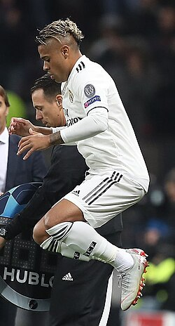

Mariano Díaz Mejía
Mariano Díaz

Mariano con el Real Madrid en 2018.
Datos personales
Nombre completo
Mariano Díaz Mejía
Fecha de nacimiento
1 de agosto de 1993
Lugar de nacimiento
Premiá de Mar
,
Barcelona
,
España
Nacionalidad
Española
y
dominicana
Deporte
Fútbol
Posición
Delantero
Trayectoria
Mariano Díaz Mejía (Premiá de Mar, 1 de agosto de 1993) es un futbolista hispano-dominicano que juega como delantero en el Deportivo Alavés de la Primera División de España. Es internacional con la selección de fútbol de República Dominicana.
Trayectoria
De padre español y madre dominicana, Mariano nació en Premiá de Mar, Barcelona. Empezó a jugar en la Salle Premià de Mar y posteriormente en el Club Esportiu Premià. En 2002 en el Real Club Deportivo Espanyol de su ciudad natal. Permaneció en el club hasta el año 2006 cuando se incorporaría a las categorías inferiores del CE Premià. Estuvo dos temporadas ahí y luego pasó a la Fundación Sánchez Llibre, para terminar recalando en el fútbol base del Club de Fútbol Badalona en 2009.
En 2011, siendo juvenil, debutó con el primer equipo en Segunda División B, participando de las tres primeras jornadas de la temporada 2011-12. Durante ese lapso, marcó un gol en la Copa del Rey.
Real Madrid
Mariano consiguió su fichaje por el Real Madrid, que le derivó al equipo juvenil A, donde pasó el resto de la temporada. Concluida su etapa como juvenil, en 2012, Mariano fue promovido al segundo filial del club madrileño, en el que no tuvo mucha participación. Si bien concluyó la temporada 2012-13 de Segunda División B con 20 partidos jugados y 3 goles anotados, no dispuso de una cantidad considerable de minutos en la mayoría de los mismos.
El siguiente 18 de enero de Mariano hizo su debut profesional en el Estadio Alfredo Di Stéfano, que aparece con el filial en la derrota 1-2 ante el Sporting de Gijón, por el campeonato de Segunda División; sustituyó a los cinco minutos finales en lugar de Raúl de Tomás. En 2014-15, con Castilla ahora en el tercer nivel, Mariano fue promovido de manera indefinida para el equipo; hizo también diez partidos, seis desde el banquillo, y anotó cinco veces.
Vistió por primera vez la camiseta del primer equipo del Real Madrid el 28 de julio de 2016 en el partido contra el Paris Saint-Germain en el torneo de pretemporada International Champions Cup 2016. El partido finalizó 1-3 con victoria francesa.
Olympique de Lyon
El 30 de junio de 2017 se hizo oficial su traspaso al Olympique de Lyon de la Ligue 1 de Francia a cambio de ocho millones de euros, guardándose el conjunto blanco una opción de tanteo. En su primera y única campaña en el equipo francés tuvo una excelente temporada, logrando 21 goles y 7 asistencias. Mariano terminó como quinto anotador de la liga francesa con 18 goles, ayudando a su equipo a regresar a la Liga de Campeones después de un año de ausencia.
Retorno al Real Madrid
Tan solo un año después del fichaje de Mariano por el Lyon, ante el interés mostrado por el Sevilla Fútbol Club para contratar al jugador, el club madrileño hizo uso de la opción de tanteo que firmó sobre una posible venta del futbolista a otro club, consiguiendo fichar nuevamente al jugador tras llegar a un acuerdo con el club francés. Su re-debut se realizó el 19 de septiembre de 2018 ante la Roma, en la victoria por 3 a 0, anotando el tercer gol del equipo.
El 1 de marzo de 2020, con un minuto y medio de entrada en el campo anotó su primer gol en un «Clásico» frente al Fútbol Club Barcelona al marcar el segundo gol de la victoria «merengue» por 2-0.
Tras el parón impuesto por la crisis del COVID-19, el 16 de julio de 2020 Mariano se proclamó campeón de liga con el Real Madrid.
Fue parte de la primera plantilla del Real Madrid durante 6 temporadas, jugando 84 partidos (14 por temporada) y marcando 12 goles. Estos registros convierten a Mariano en el delantero con peores registros goleadores de la historia del Madrid, en proporción al tiempo que ha sido jugador de la primera plantilla.
Sevilla F. C. y Deportivo Alavés
En septiembre de 2023, fichó por el Sevilla Fútbol Club por una temporada. En los primeros seis meses de competición el delantero todavía no se había estrenado. Finalmente terminó la temporada con 13 partidos, dos como titular, 320 minutos totales y ningún gol.
En julio de 2025, tras más de un año sin equipo, empezó a entrenar con el Deportivo Alavés. Participó en los partidos de pretemporada y el 7 de agosto firmó un contrato hasta 2027.
Selección nacional
Selección dominicana
Mariano disputó un partido con la selección de República Dominicana el 24 de marzo de 2013, en un encuentro de carácter amistoso contra la selección de Haití. En ese partido, marcó el último de los tres goles y dio una asistencia para que el conjunto quisqueyano venciera a su clásico rival por 3 a 1. El no haber debutado en un partido oficial con la República Dominicana le da opciones para jugar por la selección de su país de nacimiento, España. El 25 de marzo de 2025 jugó como titular en partido amistoso ante la selección de Puerto Rico, marcando el primer gol del partido a los 20 minutos del comienzo.